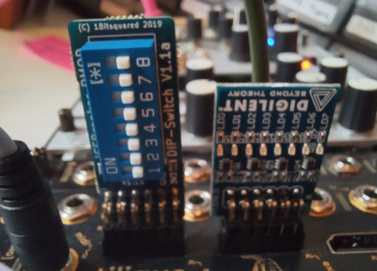
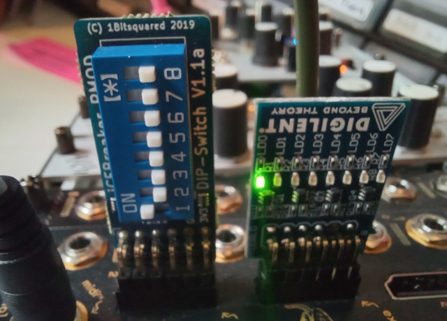

Tutorial 5: Using (third-party) PMODs
Note
If you’re trying to use the TLQ-EXPANDER, it has a dedicated page.
Any third-party PMODs can be used with Tiliqua to add extra functionality. For example, see a big list here or a smaller list here, although you’ll find them everywhere! Just make sure it expects a 3.3V supply, and draws less than 100mA or so, as it will be sharing Tiliqua’s power supply.
For example, a 8 bit DIP switch and LED strip.
{kind=link}

We can configure Tiliqua to read the DIP switches and control the LEDs with Platform resources.
In this setup we have the DIP switches connected to ex1 ( using dir=”i” ) and the LED strip connected via ex0 ( using dir=”o” )
platform.add_resources(
[
Resource(
"ex1_dip",
0,
Subsignal("pin1", Pins("1", dir="i", conn=("pmod", 1))),
Attrs(IO_TYPE="LVCMOS33"),
),
Resource(
"ex0_led",
0,
Subsignal("pin1", Pins("1", dir="o", conn=("pmod", 0))),
Attrs(IO_TYPE="LVCMOS33"),
),
]
)
ex1_dip = platform.request("ex1_dip", 0)
ex0_led = platform.request("ex0_led", 0)
We can use the DIP switch pin1 to turn on the first LED in the strip.
# The dip switch is asynchronous to our clock domain so we need
# to make sure to bring it into our clock domain.
#
# Reference: https://amaranth-lang.org/docs/amaranth/v0.5.8/stdlib/cdc.html
#
dip_pin1_sync = Signal()
m.submodules.dip_pin1_sync = FFSynchronizer(ex1_dip.pin1.i, dip_pin1_sync)
# Turn on LED when dip switch set.
m.d.comb += [
ex0_led.pin1.o.eq(dip_pin1_sync),
]
{kind=link}

We might also use the DIP switch setting to decide to invert an input in the mirror example
# Invert channel 0 when dip switch set.
ch0_in = self.i.payload[0].as_value()
ch0_out = Signal.like(ch0_in)
m.d.comb += [
ch0_out.eq(Mux(dip_pin1_sync, -ch0_in, ch0_in)),
self.o.payload[0].eq(ch0_out),
]